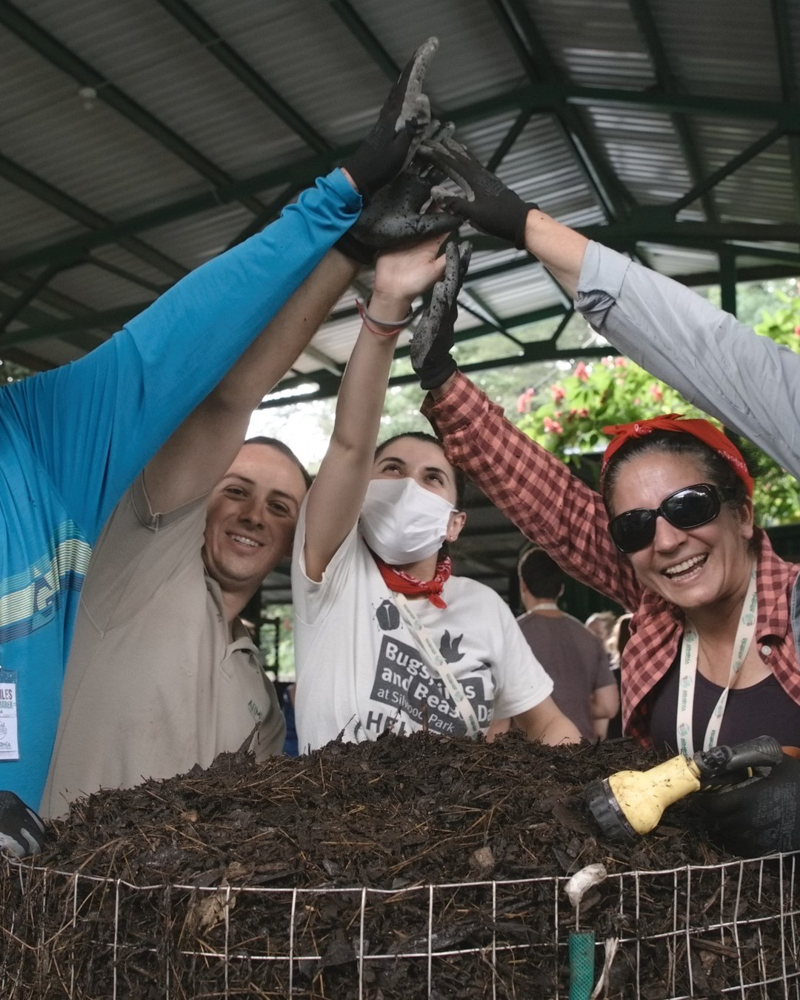
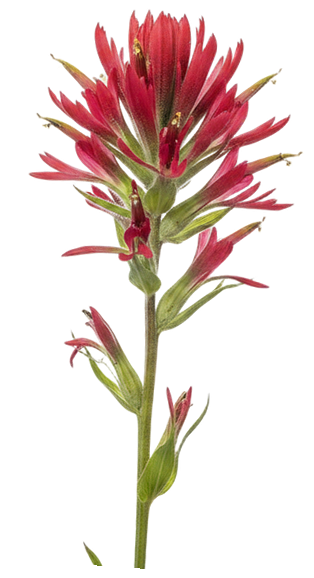
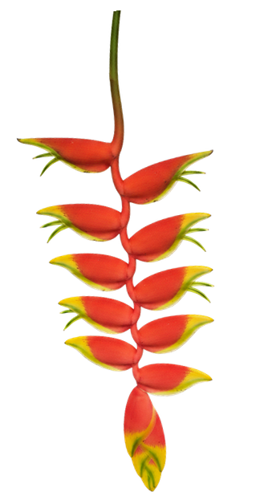

What does Regenerative actually mean?
And who gets to decide?
A destination
or a direction?


A certified status
or a way of thinking?

A premium product,
or a standard everyone who works the land can reach?


Living soil in the hands of every person who works the land.
What does regenerative mean to you? Tell us in the comments.